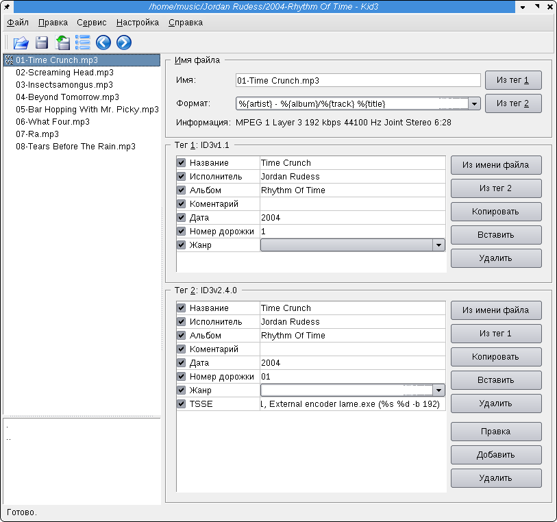
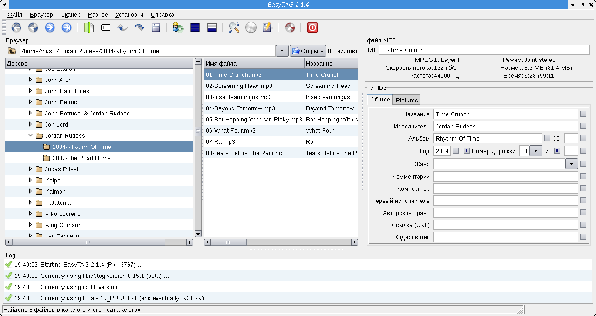
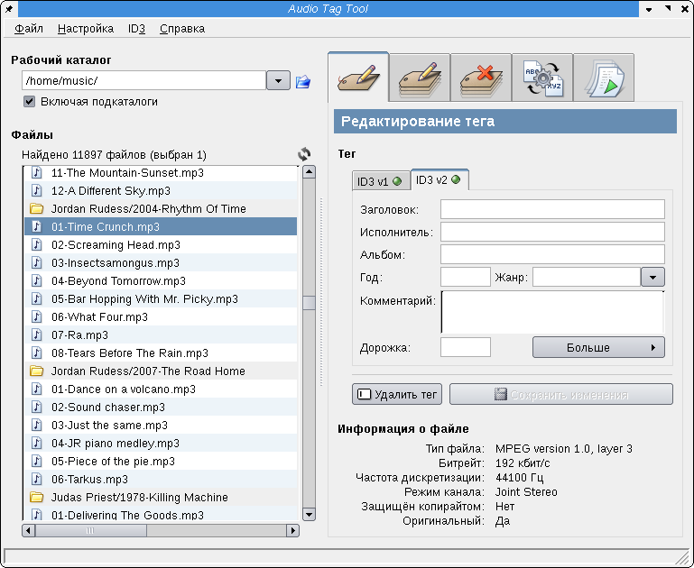
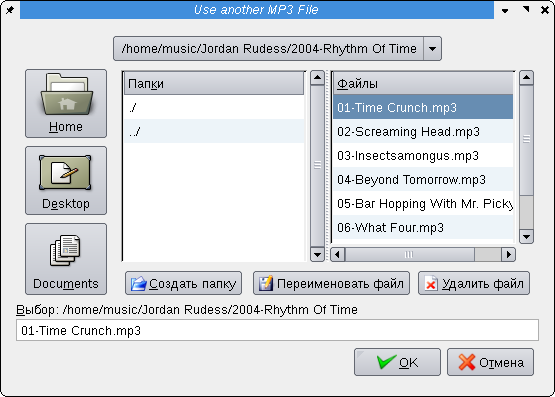
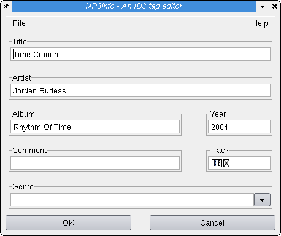
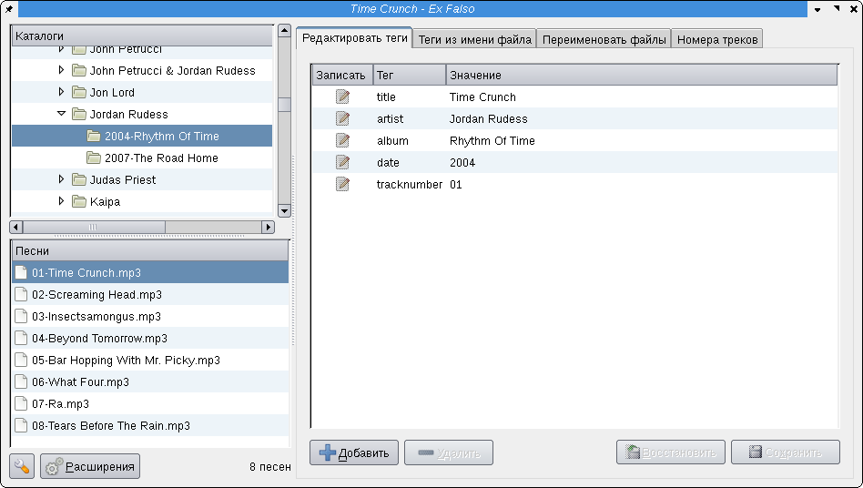
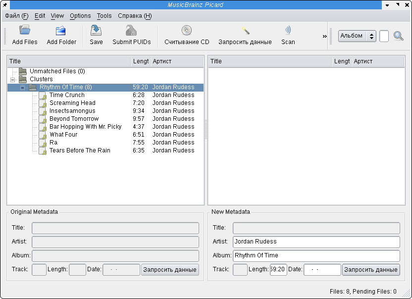
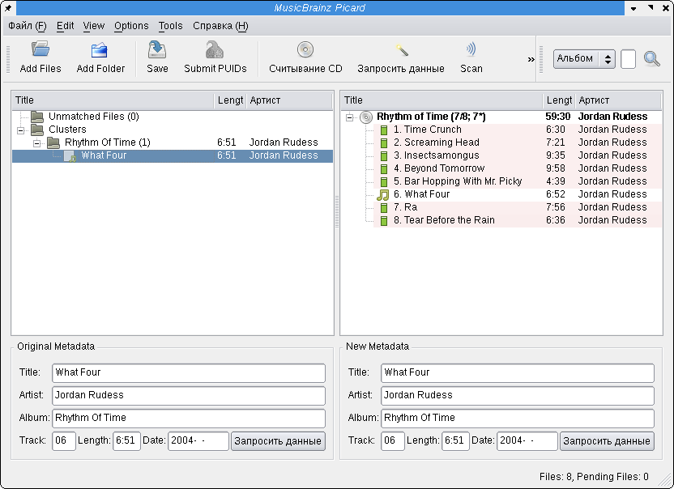

Решил объединить две статьи о редактировании id3-тегов в mp3-файлах, попутно обновив часть перекодирование тегов. Раньше я выполнял перекодирование id3-тегов из CP1251 в Unicode с помощью самосборного deb-пакета mp3unicode. Через некоторое время я нашёл ей более подходящую альтернативу в репозитории Debian.
У меня есть довольно большая коллекция музыки в формате mp3. Естественно большую коллекцию нужно каким-то образом упорядочивать, очень помогают в этом теги id3.
Если я граблю новый компакт-диск в mp3-файлы, в первую очередь в простановке тегов может помочь cd-text - информация, которая может находиться уже на самом диске. Затем, если cd-text на диске не обнаружен, стоит попытаться воспользоваться функцией поиска информации на сервере cddb. При наличии неполной информации в тегах можно воспользоваться сервером MusicBrainz для получения недостающих полей.
Если я копирую mp3-файлы у друзей, перед занесением в свою коллекцию, я проверяю наличие тегов. Бывает, что теги неполные, поэтому лучше запросить поиск информации на сервере cddb. Бывает, однако, что русскоязычных исполнителей в cddb найти не удаётся, поэтому приходится довольствоваться имеющимися тегами.
Теги id3 бывают трёх версий:
Теги idv1 и id3v1.1 представляют собой практически одно и то же. Эти теги по стандарту поддерживают хранение информации только в кодировке ASCII, то есть поддерживает хранение только латинских букв, цифр и знаков препинания. Однако требования стандарта многие плееры и редакторы id3-тегов игнорируют, и считают что в тегах допустимы любые символы из системной 8-байтной кодировки. Естественно при смене системной кодировки символы вне диапазона ASCII будут отображаться неправильно. Поскольку на территории России широко распространена операционная система Windows, в большинстве случаев системной 8-байтовой кодировкой является cp1251. Становится понятно, что большинство mp3-файлов имеют теги в кодировке cp1251.
В Linux некоторые плееры позволяют указывать 8-байтную кодировку для idv3-тегов и для отображения информации в списке воспроизведения перекодируют текст на лету. Другие плееры занимают принципиальную позицию и строго придерживаются стандарта. Они отображают правильно только текст в ASCII-кодировке.
Однако выход из этой ситуации есть. Теги id3v2 поддерживают хранение текста в кодировке Unicode, и поэтому проблем с кодировками у них нет.
Так вот, когда ко мне попадают файлы с тегами id3v1 в кодировке cp1251, и для этих файлов не удалось найти информацию на сервере cddb, я могу воспользоваться программой, которая перекодирует id3v1-теги в теги id3v2.
Рецепт, видимо, подсмотрел здесь: http://vnaum.com/stuff/mp3tags.html Хотя не уверен, может быть взял из другого места.
Для этого ставим пакет mutagen, позволяющий редактировать различные виды музыкальных тегов:
# aptitude install python-mutagen
Переходим в каталог с музыкой, скопированной у друзей, пользующихся Windows. Ищем в текущем каталоге файлы по расширению mp3, для каждого из найденных файлов меняем кодировку, удаляем теги версии 1, записываем теги версии 2:
$ find . -iname "*.mp3" -print0 | xargs -0 mid3iconv -e CP1251 -d --remove-v1
Описание опций:
Я перепробовал несколько программ для редактирования тегов, в том числе EasyTag и Kid3. Эти программы хорошо справляются с ASCII-текстом, но при использовании символов из Unicode, они обе сходят с ума и начинают прописывать в теги всякую чушь. К сожалению с их помощью я успел загубить теги в mp3-треках нескольких исполнителей, поэтому пользоватьcя в дальнейшем ими я не собираюсь.
Поиск в репозитории программ для редактирования id3-тегов из графического интерфейса дал следующие результаты:
Kid3 - использует KDE, в etch совершенно не пригоден для редактирования id3v2-тегов, хотя соответствующая форма для редактирования id3v2 имеется. В lenny научился понимать теги id3v2.3 и id3v2.4, вполне пригоден для редактирования. Имеется лишь одно небольшое неудобство - отсутствие дерева для навигации по файловой системе, заточен в первую очередь на индивидуальное редактирование тегов отдельных треков.
EasyTag - использует GTK, в etch проставлял id3v2-теги так, что некоторые программы их не понимали, в lenny не проверял, но скриншот сделал:
TagTool - использует GTK, совершенно кривое поделие,
Пакет mp3info-gtk и утилита gmp3info из него - подвержена той же болезни, что и её консольный собрат - поддерживает только id3v1 и id3v1.1.
Состоит из двух раздельных окон. В первом окне можно выбрать mp3-файл (только один), который будем редактировать. После выбора файла нужно нажать кнопку "Ok".
После этого первое окно закроется, откроется второе, в котором можно отредактировать теги выбранного файла. После закрытия второго окна программа завершается и для редактирования тегов другого файла нужно запускать её заново.
Ex Falso - использует GTK+ и библиотеку mutagen, программа отличная, пользуюсь с удовольствием. Все необходимые функции имеются.
Несколько особняком от графических утилит для редактирования id3-тегов стоит программа Picard, предназначенная для поиска информации о mp3-треках по базе данных MusicBrainz. Для собственно редактирования id3-тегов она малопригодна.
Сначала нужно добавить в программу mp3-файлы и объединить их в кластер, если предполагается, что файлы составляют альбом.
После этого можно начать процесс сканирования. Программа найдёт группу логически связанных друг с другом файлов, наиболее подходящую к файлам из кластера. При поиске учитывается множество факторов: длительности треков, названия файлов и папок, имеющиеся теги, информация из других файлов кластера. Программа оценивает эвристическими методами схожесть конкретного файла с файлом, информация о котором уже есть в базе и выдаёт наиболее точно соответствующую запись из базы MusicBrainz:
Для редактирования новых тегов, как я уже заметил выше по тексту, я пользуюсь программой Ex Falso.
Это GTK+ программа, поэтому выглядит она не очень красиво, но зато прекрасно умеет проставлять теги, которые одинаково правильно читаются в большинстве программ. Во всяком случае amaroK читает их прекрасно.
Установить программу лучше вместе с рекомендованными зависимостями:
# aptitude install --with-recommends exfalso
При этом также будут установлены плагины для получения информации из баз данных CDDB и MusicBrainz, которыми я успешно пользуюсь. Есть ещё довольно большое количество плагинов, один из которых может пригодиться и вам.
При обновлении с Etch на Lenny в Ex Falso пропал плагин, умеющий запрашивать информацию из MusicBrainz. Вместо него можно воспользоваться программой Picard, которую можно установить следующей командой:
# aptitude install picard
Выбору риппера компакт-дисков я посвятил отдельную статью CD-рипперы в Linux. Для прослушивания музыки пользуюсь в основном Amarok.